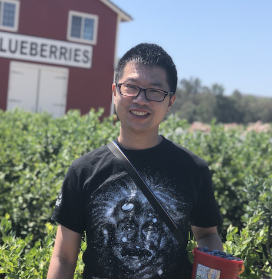

Hi 👋, I'm Jiajie "JJ" Xiao.
Thank you for visiting my personal website and taking an interest in my journey.
I am passionate about contributing to a better world through the lens of science and technology. Currently, I serve as the Sr. Director of Machine Learning and Head of Computational Sciences at Curve Biosciences, where I lead the development of cutting-edge AI/ML-powered molecular diagnostic platforms for chronic disease surveillance. My team focuses on building innovative computational solutions that transform how we monitor and detect diseases. Prior to this role, I was a Staff Machine Learning Scientist at Freenome, where I worked on multi-domain (e.g. multiomics, EHR) models to facilitate sensitive and specific blood-based early cancer diagnosis. My expertise also extends to therapeutic development, including ML-guided protein design and drug discovery, gained through my experiences at GSK and WFU.
I specialize in adapting state-of-the-art AI/ML advancements to navigate challenges posed by various types of high-dimensional and noisy data, thereby driving data-informed decision-making. Described as a fast learner, active researcher, and collaborative servant leader, I thrive on addressing complex, real-world problems with cross-functional teams. I am committed to using my expertise to make a positive impact on people’s lives.
Research Interests
As a physicist with interest in mitigating human suffering from diseases, I came across multidisciplinary areas such computational biophysics, chemistry and biology. I have been investigating microscopic system through molecular dynamics studies as well as the macroscopic one in population-wise genomic discovery.
My journey into machine learning began in the middle of my PhD in Physics and has since become a focal point in my recent endeavors. Presently, my research is concentrated on applying advanced machine learning methodologies to tackle pressing medical challenges. I find joy in the process of researching on cutting-edge AI/ML and their applications that facilitate life-saving innovations. I am motivated by the potential impact of my research on AI4Science.